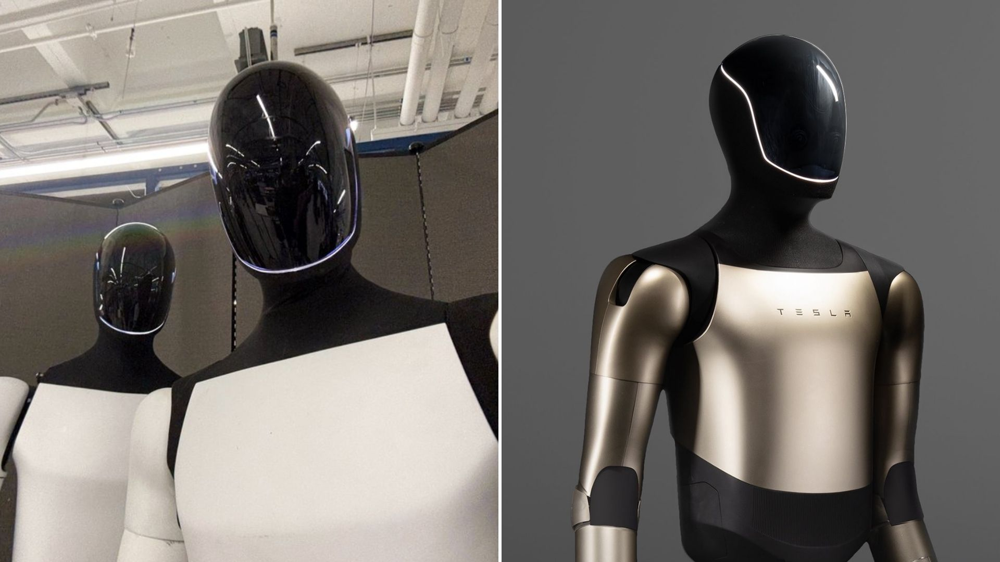

マスクと同社は、Optimusをニッチなロボット実験としてではなく、Teslaの将来の中核として位置づけている。その旗印は「AIを物理世界に持ち込む（マスタープラン第4部）」だ。2025年9月、マスクはTeslaの将来価値の「80%」がOptimusおよび関連AIビジネスから生まれると公言した。この主張は、同社を自動車メーカーから「フィジカルAI」プラットフォームへと再定義するものだ。
Teslaは、Optimusの限られた、しかし意味のある物理的能力を公開デモしてきた。2024年から2025年にかけての動画や演出されたデモを通じて、Optimusは歩行動作の改善、基本的なマニピュレーションや家事タスクの実行、シンプルなピック＆プレース操作、そして演出された社交場面での対話を披露してきた。
最も目に見える改善点の一つは、より自然なかかと→つま先の歩き方だ。これが画期的とは言えないかもしれないが、多くのヒューマノイドロボット企業はいまだにこの段階でつまずいている。Optimusは産業用ロボットとして売り出されてきたが、Teslaはトレンドの波に乗っている。他の多くのヒューマノイドロボット企業と同様、Optimusが家事をこなす様子を披露してきた。
Optimusはまだアメリカのヒューマノイドロボットの代名詞ではない（その称号はAtlasが保持している）が、鍋をかき混ぜ、掃き掃除をし、掃除機をかけることは確かにできる。今ではキャビネットやカーテンを開け閉めし、ペーパータオルを破り、ゴミ袋を取り出し、Model Xの車体部品をドーリーに載せることもできる。
しかし、ここに落とし穴がある。Teslaはこれらのデモを、視覚ベースの入力で訓練された統合制御ポリシー（「単一のニューラルネットワーク」）の産物として位置づけており、人間のビデオデータを使ってスキル習得を加速させるトレーニングパイプラインを強調している。これは大きな意義を持つ。注目すべきは、これらのデモが示しているのは、Optimusが現在、対象物が既知で、照明が制御され、失敗のパターンが限定されているという構造的ないし軽く演出された環境でのみ信頼性高く動作することだ。雑然とした一般家庭や完全に稼働中の工場セルにおける堅牢な自律性はまだ確立されていない。
同時に、Teslaのコア事業であるEVビジネスは2025年に逆風にさらされており、大規模な時価総額の下落や収益圧力が、Optimusが規模での商業的リターンをもたらせるかどうかへの精査を一層厳しくしている。
最新のOptimus世代における最も明確な進歩は、単独の劇的な飛躍ではなく、統合レベルの向上だ。第一に、ロボットの歩行と全身協調は、最初期のプロトタイプよりも滑らかになった。Teslaはこれを、孤立した手足の制御スクリプトではなく全身制御の進歩として位置づけている。
第二に、Teslaのトレーニング手法——人間のカメラデータからの視覚のみの模倣学習へのシフト——は、各タスクのためにコントローラーを手作りすることなくスキル習得を拡張しようとする戦略的試みを意味する。第三に、Teslaのデモは、歩行、知覚、基本的なマニピュレーションを単一の制御スタックの下に統合してきた。これが汎化できれば、エンジニアリングの脆弱性を減らし、新たな行動の追加を簡素化することになる。頻繁に転倒せずに歩き、適度に予測可能な環境でピック＆プレースを確実に行えるロボットは、反復的かつ低リスクな作業には有用だ。しかし、これらの能力が長時間・高負荷の産業環境にまで拡張・強化できるかどうかはまだ見極められていない。
顕著なギャップが依然として存在する。デモは主に演出された環境での短い稼働にとどまっている。継続的な運転、堅牢なエラー回復、雑然として動的な人間の空間への適応は公開デモでは示されていない。重いペイロードや精密な器用さについての主張は、理論的なものか、制約された条件下でのみ示されているに過ぎない。Teslaの以前の発言では、理想的条件下での最大持ち上げ能力（150ポンド＝約68kg）が示唆されていた。一方で、移動しながら自律タスクを実行する際に実際に運搬できる作業ペイロードははるかに低く、一般的には45ポンド（約20kg）だ。
バージョン2.5（「ゴールデン」）は外装デザインと外観的仕上げを改善したが、多くの観察者やレビュアーは、最近のソーシャルメディアでの公開を機能面では物足りないと評した。非公式デモでは、ヒューマノイドは音声コマンドにゆっくりと反応し、不自然な間がある。動作は慎重で、より新しいOptimus世代に期待されるものとは程遠い歩き方だ——バージョン2.5は外観の洗練が実証可能な機能を追い越してしまったのだ。Teslaが人間の音声への素早い反応、一般的なタスクのサイクルタイム、あるいは独立した実地試験といった運用指標を公表するまで、このロボットの実用的な限界は主要な不確実性であり続ける。
Boston DynamicsのAtlasは長らく動的な俊敏性の公的基準を設定してきた。跳躍、ジャンプ、そして素早いバランス回復はAtlasの得意技だ。2024年から2025年にかけて、Boston Dynamicsは引き続き高度な動的行動を実証し、高性能なバランスと移動のための技術的ベンチマークとして機能する全電動Atlasを強調した。
Optimusは同レベルの動的な運動能力を示したことはない。その代わりに、改良は安定したエネルギー効率の良い歩行と全身協調を優先してきた。曲芸、積極的な回復、または高速の障害物回避を必要とするアプリケーションでは、Atlasクラスのパフォーマンスは、Teslaが公開デモで示したものとは雲泥の差だ。
Agility Robotics（Digit）、Figure、Apptronikなどの企業は、ユースケースと商業的検証の観点からヒューマノイドにアプローチしている。Digitは有料パイロットと物流展開を開始しており、倉庫環境で測定可能な価値を既に生み出しているヒューマノイドの最も明確な例だ。GXOとのDigitの複数年展開合意は、収益化への初期ルートを示している。
FigureとApptronikも同様に実際的な展開と製造パートナーシップを強調している。これに対し、Optimusのデモは最近、幅広さ（家事プラス産業スタイルの取り扱い）と規模の約束を強調し始めたが、検証済みの収益主導型の実地展開よりも先行している。Teslaの優位点はその生産・AIインフラであり、このロボットはTeslaの工場でのトレーニングにも展開されている。
中国企業は最適化手法を追求してきた。急速なイテレーション、製造しやすさ、そして稼働サイクルエンジニアリングだ。Unitreeの最近のヒューマノイドモデル（および低コストの研究用ユニット）は、俊敏な動きとアクセスしやすいハードウェアを強調している。UBTECHのWalkerファミリーは、自律的なバッテリー交換による24時間365日の継続運転を可能にするなど、ミッション指向の機能を実証した。これは、時に曲芸よりも稼働率が重要な工場設定での実用的な優位性だ。
最近の報告では、中国企業が価格を下げ、工場展開を積極的に進めていることが示されている。彼らの重点は、単独の「人間らしい」汎用ロボットのデモよりも、実際の運用役割に適した信頼性が高くメンテナンスしやすい機械の生産にある。その狭い生産中心のアプローチは、低いユニットコストと工場での高い稼働率をもたらすならば、ヘッドラインを飾るデモを凌駕する可能性がある。
Teslaの公開タイムラインは繰り返し変更されてきた。リーダーシップは野心的な目標を語ってきた。マスクは2025年に約5,000台のOptimus「軍団」を生産し、2026年には数万台に拡大すると述べた。しかし、独立した報道によれば、Teslaはこれらの目標を達成するために必要なペースに遅れており、2025年の生産台数は数千台ではなく数百台程度とされている。Teslaはまた、外観的なバージョン2.5ユニットを超えた第3世代の顧客向けモデルに向けた継続的開発も示唆している。同社の2025年の財務的プレッシャーと主要なロボティクス部門での組織的な入れ替わりを考慮すると、Teslaが検証可能な生産・展開データを提供しない限り、これらの生産目標は野心的な数字として見なされるべきだ。
第二の制約は材料供給だ。2025年、中国はより広範な貿易措置の一環として特定のレアアースと磁石の輸出規制を課した。これらの規制と、それに続く外交・市場の反応は、多くのロボットが依存する高性能電動モーターと磁気材料のサプライチェーンに不安定性をもたらした。政府による政策措置と中国サプライヤーとの交渉がいくらかの混乱を緩和した。しかし、この出来事は、地政学的なサプライチェーンリスクが大量生産ハードウェアプログラムの生産経済とタイムラインに実質的な影響を与えうることを浮き彫りにしている。このリスクは、Teslaがすでに直面しているエンジニアリング・検証上の課題に重なる。
最後に、コストと顧客経済は未解決のままだ。マスクの公開価格目標——規模化時に約2万〜3万ドル——は、Optimusを自動車や他の産業用ロボットと比較して手頃なものとして位置づける。しかし、Teslaが複製可能な製造コストカーブ、保証・サービスモデル、そして工場や家庭でのロボットの実際の運用経済を実証するまで、その価格は事実ではなく目標として捉えるべきだ。
競争力を決定する商業的テストは明快だ。Optimusは既存の自動化代替手段と比較して、耐用年数にわたる総所有コストを上回る価値を提供できるか？実地試験データとサードパーティ検証が現れるまで、その問いは未解のままだ。
4年間の公開開発を経て、Optimusは演出された環境での統合歩行、視覚ベースのトレーニング、基本的なマニピュレーションにおいて信頼できる進歩を示した。Teslaの規模、統合AIスタック、明確な戦略的焦点は、Optimusを注目すべき重要な取り組みにしている。
しかし、プロジェクトの現在の強みは主にシステム統合と野心にある。運用面での成熟度、継続的な稼働率、実地で証明された信頼性、実証可能なユニット経済はまだ示されていない。最近の外観的な進歩（バージョン2.5の「ゴールデン」ユニット）とマスクの注目を集める主張は、また期待値を引き上げたが、最も商業的に重要な競争はステージの振り付けで決まらない。
それは、長時間の作業をこなし、安価にサービスを受けられ、実際の施設で価値あるタスクを一貫して実行できるロボットによって決まる。Optimusがアメリカのヒューマノイドロボットの代名詞になれるかどうかは、Teslaが見世物から持続的で独立して検証可能な結果へと移行し、サプライチェーン、生産、規模でのサービス経済を管理できるかにかかっている。